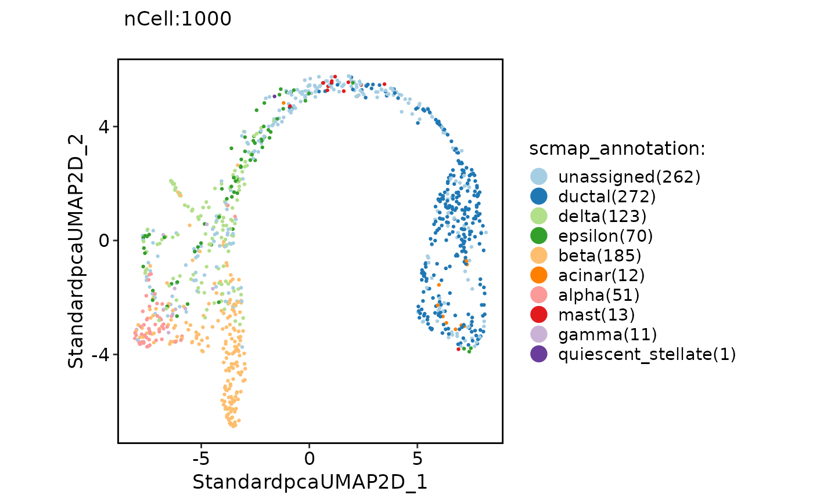
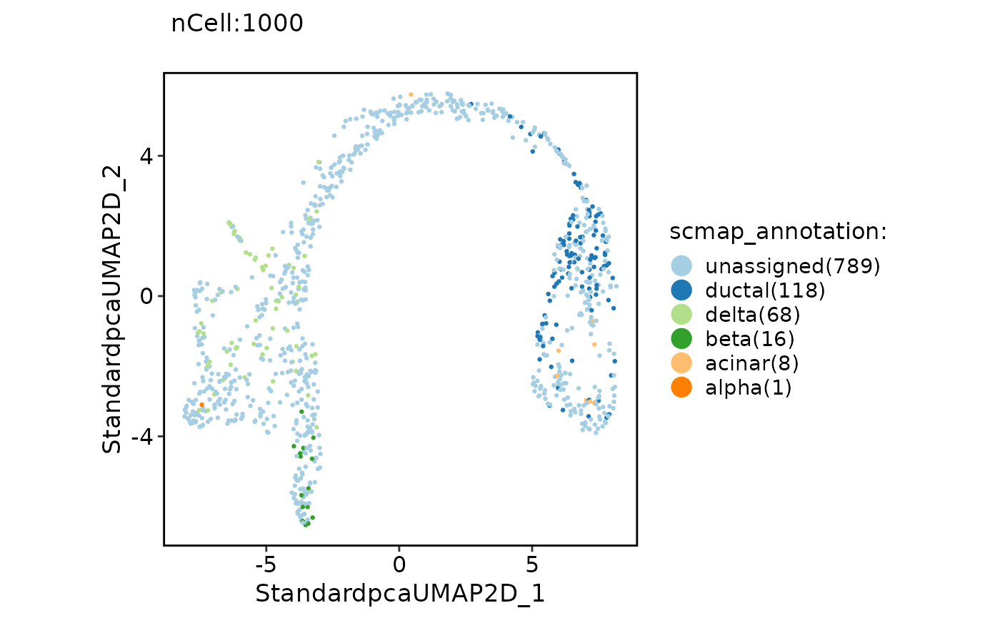

Annotate single cells using scmap.
Usage
RunScmap(
srt_query,
srt_ref,
ref_group = NULL,
method = "scmapCluster",
n_features = 500,
threshold = 0.5,
k = 10,
query_assay = "RNA",
ref_assay = "RNA",
force = FALSE
)Examples
if (!require("SeuratData", quietly = TRUE)) {
devtools::install_github("zhanghao-njmu/seurat-data")
}
library(SeuratData)
library(stringr)
suppressWarnings(InstallData("panc8"))
data("panc8")
# Simply convert genes from human to mouse and preprocess the data
genenm <- make.unique(str_to_title(rownames(panc8)))
panc8 <- RenameFeatures(panc8, newnames = genenm)
#> Rename features for the assay: RNA
panc8 <- check_srtMerge(panc8, batch = "tech")[["srtMerge"]]
#> [2022-08-26 01:25:35] Spliting srtMerge into srtList... ...
#> [2022-08-26 01:25:40] Checking srtList... ...
#> Data 1/5 of the srtList is normalized without log transformation. Perform log1p on the data...
#> Perform FindVariableFeatures on the data 1/5 of the srtList...
#> Data 2/5 of the srtList is normalized without log transformation. Perform log1p on the data...
#> Perform FindVariableFeatures on the data 2/5 of the srtList...
#> Data 3/5 of the srtList is raw counts. Perform NormalizeData(logCPM) on the data ...
#> Perform FindVariableFeatures on the data 3/5 of the srtList...
#> Data 4/5 of the srtList is normalized without log transformation. Perform log1p on the data...
#> Perform FindVariableFeatures on the data 4/5 of the srtList...
#> Data 5/5 of the srtList is raw counts. Perform NormalizeData(logCPM) on the data ...
#> Perform FindVariableFeatures on the data 5/5 of the srtList...
#> Use the separate HVF from the existed HVF in srtList...
#> [2022-08-26 01:25:56] Finished checking.
# Annotation
data("pancreas1k")
pancreas1k <- Standard_SCP(pancreas1k)
#> [2022-08-26 01:26:13] Start Standard_SCP
#> [2022-08-26 01:26:13] Checking srtList... ...
#> Data 1/1 of the srtList is raw counts. Perform NormalizeData(logCPM) on the data ...
#> Perform FindVariableFeatures on the data 1/1 of the srtList...
#> Use the separate HVF from the existed HVF in srtList...
#> [2022-08-26 01:26:14] Finished checking.
#> [2022-08-26 01:26:14] Perform ScaleData on the data...
#> [2022-08-26 01:26:15] Perform linear dimension reduction (pca) on the data...
#> dims_estimate is 1:18 for 'pca'
#> [2022-08-26 01:26:17] Perform FindClusters (louvain) on the data...
#> [2022-08-26 01:26:18] Reorder clusters...
#> [2022-08-26 01:26:18] Perform nonlinear dimension reduction (umap) on the data...
#> Found more than one class "dist" in cache; using the first, from namespace 'BiocGenerics'
#> Also defined by ‘spam’
#> Found more than one class "dist" in cache; using the first, from namespace 'BiocGenerics'
#> Also defined by ‘spam’
#> Found more than one class "dist" in cache; using the first, from namespace 'BiocGenerics'
#> Also defined by ‘spam’
#> Found more than one class "dist" in cache; using the first, from namespace 'BiocGenerics'
#> Also defined by ‘spam’
#> [2022-08-26 01:26:31] Standard_SCP done
#> Elapsed time: 17.91 secs
pancreas1k <- RunScmap(
srt_query = pancreas1k, srt_ref = panc8,
ref_group = "celltype", method = "scmapCluster"
)
#> Detected srt_query data type: log_normalized_counts
#> Detected srt_ref data type: log_normalized_counts
#> Perform selectFeatures on the data...
#> Creating a generic function for ‘toJSON’ from package ‘jsonlite’ in package ‘googleVis’
#> Perform indexCluster on the data...
#> Perform scmapCluster on the data...
#> Warning: Features Ac087473.1, Ac124312.1, Adamtsl3, Al035071.1, Al163540.1, Al354740.1, Al590867.1, Al592211.1, Atp5f1a, Atp5f1b, Atp5f1c, Atp5f1e, Atp5if1, Atp5mc2, Atp5mc3, Atp5md, Atp5mf, Atp5mg, Atp5mpl, Atp5pb, Atp5pd, Atp5pf, Atp5po, Bcyrn1, Bex3, C10orf10, C15orf48, C17orf76-As1, C6orf62, Cbwd5, Cd24, Cd59, Cd99, Cfb, Cnot9, Ctrb2, Cxcl8, Cyp51a1, Cysltr1, Elob, Ercc-00002, Ercc-00004, Ercc-00046, Ercc-00074, Ercc-00096, Ercc-00113, Ercc-00130, Ercc-00171, Ero1a, Ero1b, Flj22447, Gpi, Hla-B, Hnrpdl, Il32, Ins, Kiaa1244, Kiaa1324, Kiaa1328, Lactb2-As1, Linc00504, Linc01551, Linc01609, Linc01814, Linc01873, Linc02503, Lyz, Man1a1, Mir7-3hg, Mrnip, Mt-Atp6, Mt-Atp8, Mt-Co1, Mt-Co2, Mt-Co3, Mt-Cyb, Mt-Nd1, Mt-Nd2, Mt-Nd3, Mt-Nd4, Mt-Nd4l, Mt-Nd5, Mt-Nd6, Mt2a, Mtrnr2l1, Mtrnr2l2, Mtrnr2l8, Nlrp1, Norad, Olfm4, Prelid3b, Prxl2c, Rack1, Reg1a, Reg1b, Reg3a, Rgpd5, Rpl13ap17, Rpl13ap20, Rpl17-C18orf32, Rpl36a-Hnrnph2, Rps3a, Rps4y1, Scd, Scd5, Scgb2a1, Selenof, Selenok, Selenot, Selenow, Sem1, Serpina1, Serpina3, Slc25a6, Snu13, Tent5a, Tent5c, Tgoln2, Tmem66, Ugdh-As1, Znf90 are not present in the 'SCESet' object and therefore were not set.
ClassDimPlot(pancreas1k, group.by = "scmap_annotation")

pancreas1k <- RunScmap(
srt_query = pancreas1k, srt_ref = panc8,
ref_group = "celltype", method = "scmapCell"
)
#> Detected srt_query data type: log_normalized_counts
#> Detected srt_ref data type: log_normalized_counts
#> Perform selectFeatures on the data...
#> Perform indexCell on the data...
#> Perform scmapCell on the data...
#> Perform scmapCell2Cluster on the data...
ClassDimPlot(pancreas1k, group.by = "scmap_annotation")
